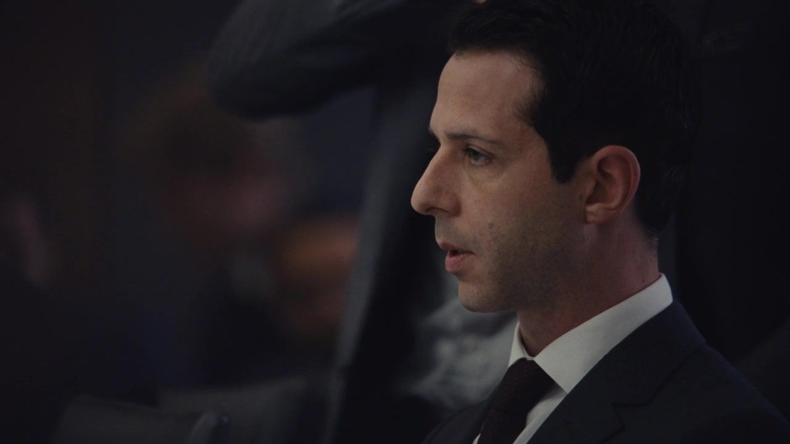
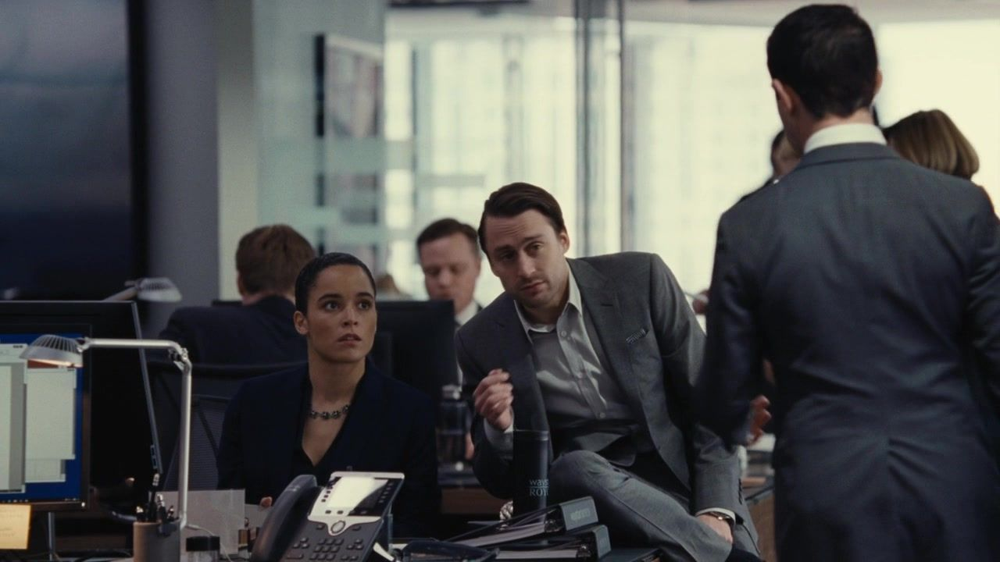
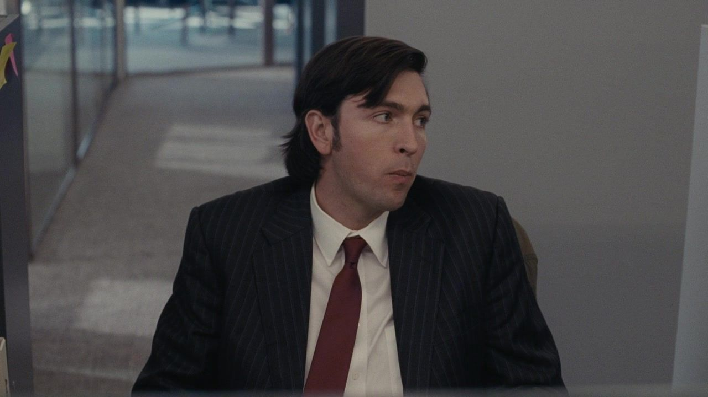
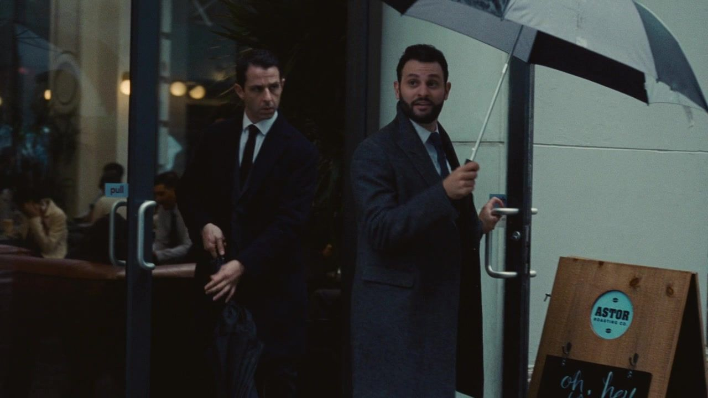
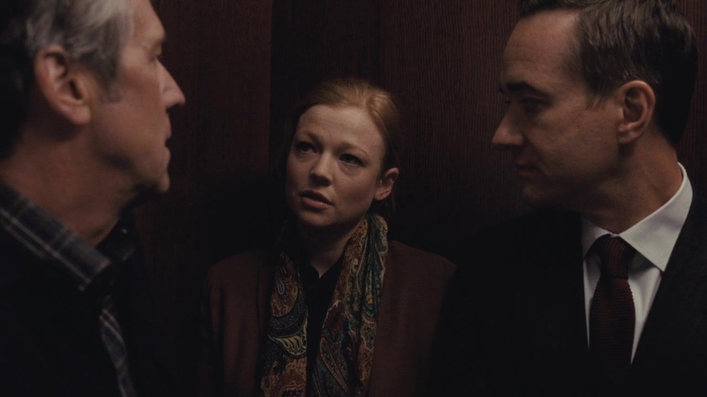
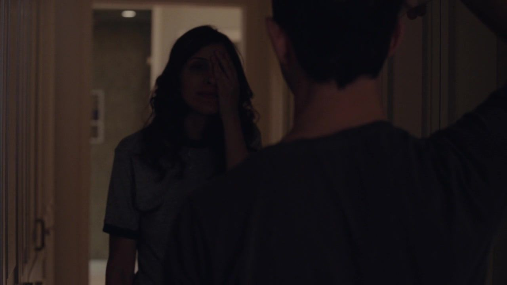
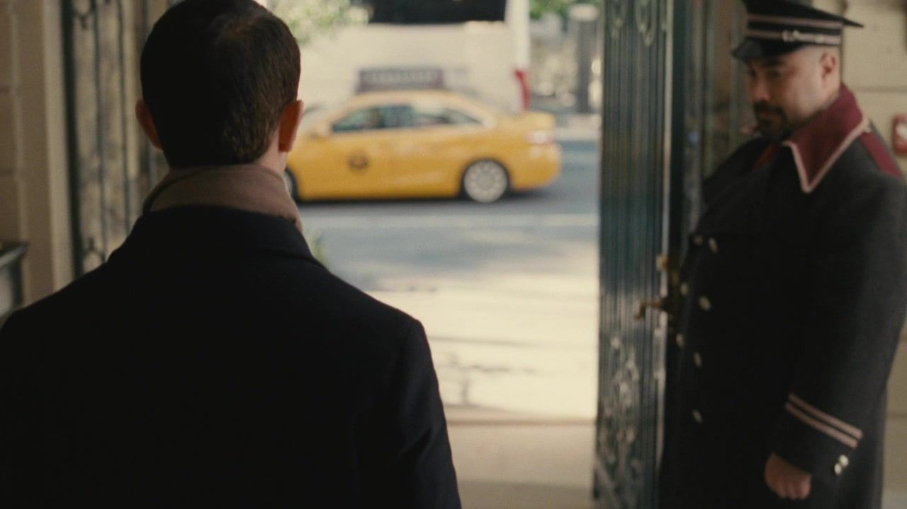

公司 / 债务细节
父亲的旧决定，变成儿子的倒计时。


THE ROY FAMILY / 罗伊家族档案 003
SEASON 01 EPISODE 03 Lifeboats
股价在下跌，银行要求按条款说话。
一位老朋友带来资金，也带来新的所有权。
剧透边界 包含 S01E01—03 剧情及本集结尾，不涉及后续集数。
剧情事实 / 个人解读分别标注 · 约 18 分钟阅读THE QUESTION / 从这里读起
前一集刚拿到代理 CEO 的位置，肯德尔就被迫处理父亲留下的债务。他想学父亲的强硬，银行却只认契约；他想证明自己能解决问题，解决方案却要让外部投资人进入公司。与此同时，希芙调查玛西娅，肯德尔试图挽回拉瓦。公司与亲密关系都在问：一次新的动作，能不能抹去原来的不信任？
公司 谁拥有正式的权力？
家庭 谁仍在等父亲的点头？
阶层 谁可以把别人的人生当游戏？
01 / THE STORY
按本集主线分为三幕；并行发生的谈话与善后，保留其交错关系。
ACT I / SCENES 01—03
公司 / 债务细节
银行电话 / 试着强硬

经营会议 / 救生艇策略

这一幕之后银行谈判没有给他退路，经营口号也不能立刻变成现金。
ACT II / SCENES 04—06
并行 / 新任 COO 与公司新人

老朋友 / 投资谈判

并行 / 希芙的调查

这一幕之后每个人都想用自己熟悉的关系降低不安，但对方并不必然接受他们的解释。
ACT III / SCENES 07—09
晚餐与第二天 / 分居夫妻

资本进入 / 向父亲汇报
尾声 / 格雷格看见的人

这一幕之后肯德尔暂时稳定了财务，父亲并不认可；观众又看见投资关系中尚未说明的一面。
02 / THE PEOPLE
看清家人的位置，再看他们为什么不能轻易站在一起。
 洛根Logan Roy
洛根Logan Roy 玛西娅Marcia Roy
玛西娅Marcia Roy 肯德尔Kendall Roy
肯德尔Kendall Roy 康纳Connor Roy
康纳Connor Roy 罗曼Roman Roy
罗曼Roman Roy 希芙Siobhan “Shiv” Roy
希芙Siobhan “Shiv” Roy 格雷格Greg Hirsch
格雷格Greg Hirsch 汤姆Tom Wambsgans
汤姆Tom Wambsgans
具体金额与条款按本集对白理解；这不是对现实银行合同的一般解释。
朋友提供的是带条件的资本，不是无偿救助；拉瓦也保留独立选择。
本集只展示斯图伊出资与他和桑迪的接触，不提前给出后来的收购方案。
图示为截至本集的亲属关系与依赖归纳，阶段说明含个人解读，不是正式公司架构；实线与虚线不表示所有人已互相知情。人物头像跨集复用，来源集数在篇末登记。
03 / FOLLOW THE CONSEQUENCE
先看当下的资金，再看所有权，最后看父子如何评价。
出资缓解迫近的偿债压力。
外部资本取得公司中的正式位置。
父亲的不满没有随危机缓解而消失。
04 / BENEATH THE ARGUMENT
本集三组冲突，分开看表面问题、双方诉求与更深的依赖。以下为个人解读。
BENEATH THE ARGUMENT / 个人解读
肯德尔要先避免债务危机，并证明自己能行动。
洛根在意外部资本进入，也保留对儿子是否合格的裁决。
用即时结果衡量，肯德尔并非什么都没做；用长期控制衡量，交易又不能被写成没有代价的胜利。两种尺度都应该摆上桌，而不是只重复父亲的评价。
父子关系让这种讨论更困难：肯德尔想汇报一项解法，也想听见认可。洛根不认可时，儿子便容易把对控制权的争执，全部体验为对自己的否定。
事实边界资金进入与股权稀释同时发生；本集尚未证明后续所有后果。
BENEATH THE ARGUMENT / 个人解读
肯德尔需要可信而迅速的救援。
斯图伊需要与资金规模相称的权益。
肯德尔面对危机时更容易把熟悉感当成确定性。斯图伊可以喜欢他，也可以在同一时间衡量其他合作对象。把两者分开，并不是认定友谊不存在。
尾声的接触画面把风险放回观众面前：认得某个人，不等于认得他全部的利益网络。谁带来钱，钱又依赖谁，是一组必须继续追问的问题。
事实边界只确认本集看见的接触，不提前披露后续合作计划。
BENEATH THE ARGUMENT / 个人解读
肯德尔希望工作与家庭一起回到正确轨道。
拉瓦可以接受亲近，同时不撤回离开的判断。
对肯德尔而言，一次温柔很容易成为又一份待公布的好消息。他需要被确认，而拉瓦正在拒绝让自己的决定随他的情绪变动。
这个支线与融资形成温和却清楚的对应：他能促成一次事件，不能独自决定事件意味着什么。关系没有因为他最近承担了更多责任，就必须给他奖赏。
事实边界不把拉瓦拒绝复合写成故意惩罚或操纵肯德尔。
05 / BETWEEN THE LINES
把短句放回场景，听清一段关系怎样改变。
银行方 → 肯德尔
We round up.我们往上取整。中文自译
说话时刻肯德尔试图把债务数字说得稍微小一点。
个人解读冷淡的短句让他的叙述姿态撞上债权人精确计算的立场。
肯德尔 → 经营团队
There are no bad lifeboats.救生艇没有坏的。中文自译
说话时刻鼓励不同业务探索增长。
个人解读他需要开放选项，也在用一个能动员人的比喻承认公司身处危险。
肯德尔 → 银行方
I was rounding down.我刚才是往下取整。中文自译
说话时刻债务金额被对方纠正时。
个人解读一句像玩笑的修饰，不能让需要偿还的数字随之变小。
三句共 12 个英文词，核对自本集非官方对白转录；中文为本页自译。“说话时刻”为情境概括，解读并非人物明确说出的意图。核对转录 ↗
06 / WATCH AGAIN
只讨论截至本集的呼应，不借后续情节倒推人物。以下为个人解读。
END OF EPISODE 03 / 本集停在这里
他可以向父亲汇报一个结果，
却仍无法替所有人解释这个结果。
救援者带来的，是同一条方向吗？
斯图伊出资取得股份与董事席位；拉瓦拒绝复合；格雷格看见斯图伊与桑迪接触。
外部投资关系的完整安排，以及洛根将如何恢复经营控制。
剧透截至 S01E03，不把后来计划写进本集。